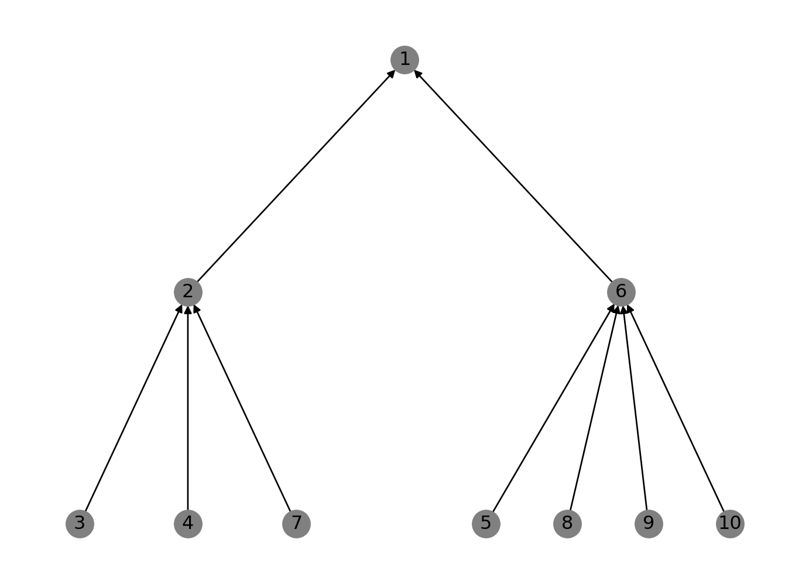
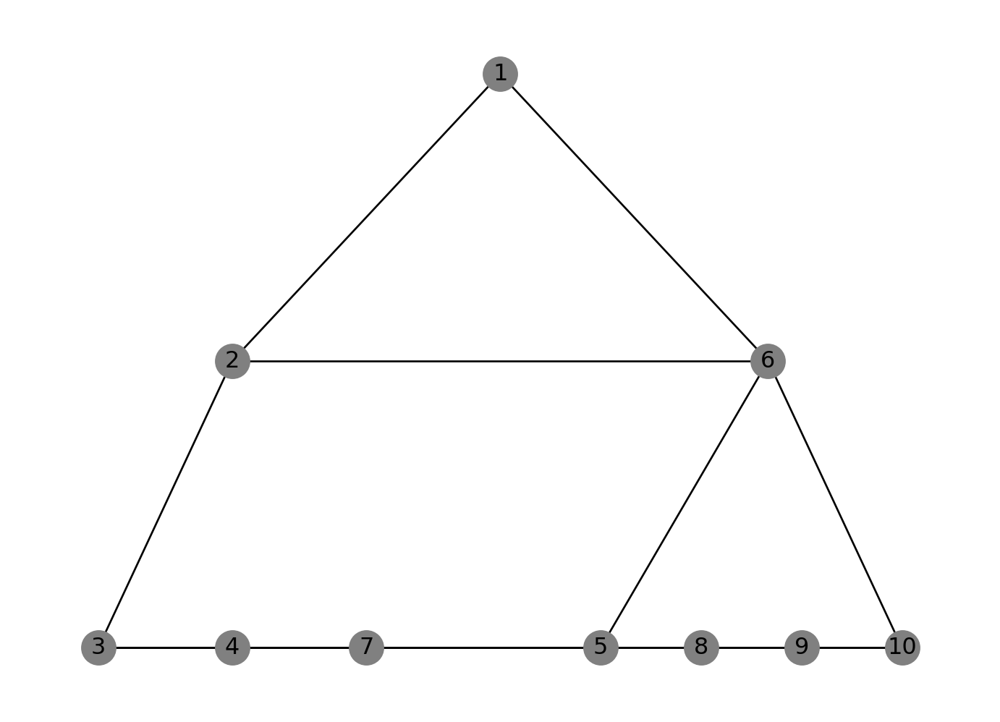

from networkx.algorithms import bipartite
import numpy as np
import matplotlib.pyplot as plt
import networkx as nxRepresenting an organizational structure with NetworkX
Abstract
This notebook uses NetworkX to create a simplified model of an organizational structure
Notebook setup
Load modules
Creating network elements
Tasks (task space)
tasks = ["A", "B", "C"]
tech_deps = [("A", "B"), ("B", "C")]Teams
teams = ["X", "Y", "Z"]Employee - team affiliations
emp_team = [("X", 3), ("X", 4), ("X", 7), ("Y", 5), ("Y", 8), ("Y", 9), ("Y", 10), ("Z", 4), ("Z", 7), ("Z", 5), ("Z", 8)]Team - task affiliations
team_task = [("A", "X"), ("B", "Y"), ("C", "Z")]Initializing networks
Reporting network
rn = nx.DiGraph()
rn.add_nodes_from(employees)
rn.add_edges_from(reporting)
pos = {
1: (0, 3),
2: (-2, 2),
6: (2, 2),
3: (-3, 1),
4: (-2, 1),
7: (-1, 1),
5: (0.75, 1),
8: (1.5, 1),
9: (2.25, 1),
10: (3, 1)
}
nx.draw(rn, with_labels=True, node_color="grey", pos=pos)
Information exchange
ix = nx.Graph()
ix.add_nodes_from(employees)
ix.add_edges_from(info_exch)
nx.draw(ix, with_labels=True, pos=pos, node_color="gray")
Employee-team affiliations
et = nx.Graph()
et.add_nodes_from(employees, bipartite=0)
et.add_nodes_from(teams, bipartite=1)
et.add_edges_from(emp_team)
nx.is_connected(et)
top_nodes = {n for n, d in et.nodes(data=True) if d["bipartite"] == 0}
bottom_nodes = set(et) - top_nodesTeam-task affiliations (allocation)
tt = nx.Graph()
tt.add_nodes_from(teams, bipartite=0)
tt.add_nodes_from(tasks, bipartite=1)
tt.add_edges_from(team_task)
nx.is_connected(tt)
top_nodes = {n for n, d in tt.nodes(data=True) if d["bipartite"] == 0}
bottom_nodes = set(et) - top_nodesCompute density metrics
Reporting network
rn_ind = rn.in_degree()
print(rn_ind)
rn_out = rn.out_degree()
print(rn_out)[(1, 2), (2, 3), (3, 0), (4, 0), (5, 0), (6, 4), (7, 0), (8, 0), (9, 0), (10, 0)]
[(1, 0), (2, 1), (3, 1), (4, 1), (5, 1), (6, 1), (7, 1), (8, 1), (9, 1), (10, 1)]Information exchange network
```